Digital filters are used to modify, in any desirable way, the spectrum of a digital signal. We can think of them as "black boxes", having a signal input, an in-the-box method used to process the signal, and a signal output. The ratio of the amplitude of the output wave to the amplitude of the input wave defines what is called the amplitude response of the filter, and can be measured using a sample sine wave. The four basic types of filters are: low-pass, high-pass, band-pass and band-reject, depending on how the in-the-box method affects the incoming signal. Low-pass filters will let all frequencies below a chosen cutoff frequency 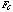 to pass through unaffected while attenuating all frequencies above it. High-pass filters on the contrary, will let all frequencies above a chosen cutoff frequency to pass through unaffected while attenuating all frequencies below it. Band-pass filters will let all frequencies within a selected band (characterized by an upper and lower limit as well as a center frequency) to pass through unaffected while attenuating all frequencies outside the band. Finally, band-reject filters will attenuate all frequencies within a selected bandwidth while letting through unaffected all frequencies outside the bandwidth.
The way the "black box" or digital filter operates is described by what is called its transfer function. In general, the transfer function will be of the form:
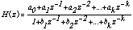 (1)
Equation (1) is a representation of the function in the z-domain, which can be used to find what is called the zeros and poles of the transfer function. By zeros we mean any value that will make the numerator, and therefore the transfer function, zero, and by poles, any value that will zero the denominator and therefore make the transfer function infinite. Another way to describe it is to think that zeros and poles place valleys and peaks in the amplitude response of the filter. In the above formula, the 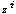 terms are unit sample delay operators, k represents the order of the filter, and 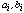 are a series of coefficients which determine the frequency response of the filter. The frequency response of a filter is a measurement of how the filter alters the characteristics of the incoming signal.
We can classify digital filters, according to the method used in the "black box", as non-recursive and recursive filters. Non-recursive or finite impulse response filters (FIR) are described by the formula
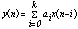 (2)
which means that the output signal y(n) is calculated based on previous inputs 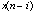. Recursive or infinite impulse response filters (IIR) are described by the formula
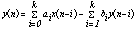 (3)
As we can see, the current, nth
sample output  , depends on current and previous
inputs, as well as on previous outputs, hence must be computed
recursively.
, depends on current and previous
inputs, as well as on previous outputs, hence must be computed
recursively.
The problem then of designing
a digital filter, for a given transfer function, is the calculation
of the coefficients of either (1), (2), or (3). This paper will
only consider recursive filters using the Butterworth and Chebyshev
types of responses. We will show how the filter coefficients can
be calculated for various orders and how this can be used to build
digital recursive filters using Csound.
IIR filters can be designed using the bilinear transformation method. In simple words, the bilinear transformation method provides us the means of describing digital filter coefficients in terms of analog filters coefficients. The reason we want to do that is because there are well-known formulas for calculating analog filter coefficients, and these can be used to calculate the "equivalent" digital filter coefficients. If the analog transfer function describing the behavior of the filter is of the type
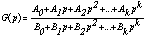 (4)
then, we need a method that will allow us to relate the analog coefficients of equation (4) with the digital coefficients of equation (1) or (3). The relationship is
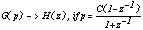 (5)
where C is a constant. Let us see now how equation (5) can be used to derive digital filter coefficients in terms of analog ones. First, we choose the order of the filter we want to design. Let us for example consider the case of a 1st order filter. Then , equation (4) becomes
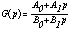 (6)
Now, we substitute (5) to (6). We get
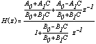 (7)
If we compare (7) with the 1st order form of (1) we have the digital filter coefficients of a 1st order filter in terms of their analog counterparts. This method can be used for any desired order of filter we want to design. We now present the results for the orders through 1 to 5:
TABLE 1
| Digital Filter Coefficients in terms of Analog Coefficients | ||
| k=1, 1st order | k=2, 2nd order | k=3, 3rd order |
| 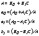 | 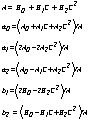 | 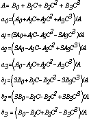 |
TABLE 2
| Digital Filter Coefficients in terms of Analog Coefficients | |
| k=4, 4th order | k=5, 5th order |
| 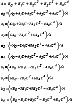 | 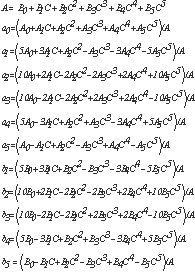 |
In order then to calculate the
filter coefficients, we need the values of  and
C.
and
C.
Butterworth filters are defined by the property that the amplitude response is maximally flat in the passband. The Butterworth low-pass amplitude-squared function is defined by
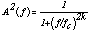 (8)
where f and represent frequency and cutoff frequency respectively and k is the order of the corresponding transfer function. Using the form of the Butterworth transfer function, (detailed formulas for which are given in the appendix), we can calculate the Butterworth analog coefficients 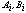. We get:
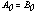 and 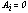, for 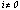 (9)
Also, the values of the coefficients , for i ranging from 0 to 5 are listed in the following table:
TABLE 3
| BUTTERWORTH DENOMINATOR COEFFICIENTS | ||||||
| order | 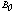 | 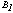 | 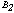 | 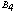 | 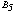 | |
| 1 | 1 | 1 | ||||
| 2 | 1 | 1.4142136 | 1 | |||
| 3 | 1 | 2 | 2 | 1 | ||
| 4 | 1 | 2.6131259 | 3.4142136 | 2.6131259 | 1 | |
| 5 | 1 | 3.2360680 | 5.2360680 | 5.2360680 | 3.2360680 | 1 |
Finally, we give the formulas for the constant C:
TABLE 4
| Constant C | |
| low-pass | 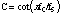 |
| high-pass | 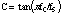 |
| band-pass | 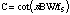 |
| band-reject | 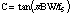 |
In Table 4, 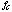 is the cutoff frequency, 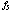 is the sampling rate frequency, and BW is the bandwidth. Let us now use all the above information to build digital Butterworth filters in Csound. Before we start , it is very important to note that the outputs will be calculated on every sample. In terms of Csound code, that means that it is necessary to have sr = kr, i.e. ksmps = 1 because we want one sample to be calculated per control period. Since we want to use delayed samples, an ideal candidate for the job is Csound's signal modifier delay1, which delays the signal by 1 sample.
For all instruments use the header:
sr = 44100
kr = 44100
ksmps = 1
nchnls = 1
All instruments use a test sound file as their input. A test score file for all the orchestras would be of the form:
;test score file
;for high or low-pass filters use
;instr # start duration cutoff frequency
;for band-pass or band-reject use
;instr # start duration center frequency bandwidth
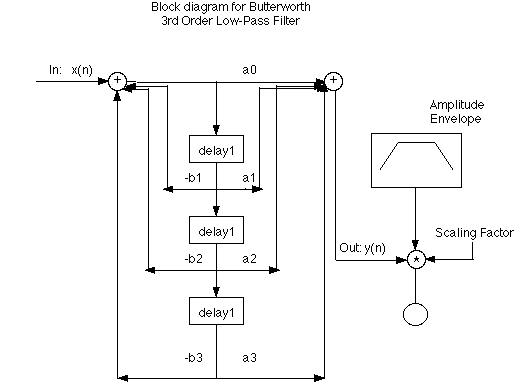
Instrument 1 is a realization of a Butterworth 3rd order low-pass filter. The order of the filter is 3; equation (3) gives:
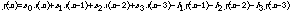
The orchestra follows:
instr 1
idur = p3 ;duration of the sound file
icut = p4 ;cutoff frequency
iscale = p5 ;scaling factor
;Calculate the intermediate coefficient C using Table 4
ivar = cos(3.14159*icut/sr)/sin(3.14159*icut/sr)
;Calculate the filter coefficients using the data from Tables
1,3
ivarsqrd ipow ivar,2 ;ivar squared
ivarcbd ipow ivar,3 ;ivar cubed
ia0 = 1/(1+2*ivar+2*ivarsqrd+ivarcbd)
ia1 = 3*ia0
ia2 = 3*ia0
ia3 = ia0
ib1 = (3+2*ivar-2*ivarsqrd-3*ivarcbd)*ia0
ib2 = (3-2*ivar-2*ivarsqrd+3*ivarcbd)*ia0
ib3 = (1-2*ivar+2*ivarsqrd-ivarcbd)*ia0
;Do the appropriate initializations
aout1 init 0
aout2 init 0
aout3 init 0
ainput soundin "test_sound" ;the input signal
;Create a 3rd order delay
adel1 delay1 ainput
adel2 delay1 adel1
adel3 delay1 adel2
;Calculate the output signal
aout = ia0*ainput+ia1*adel1+ia2*adel2+ia3*adel3-ib1*aout1-ib2*aout2-
ib3*aout3
;Apply recursion formula : y(n-1) = y(n), y(n-2) = y(n-1), etc.
aout3 = aout2
aout2 = aout1
aout1 = aout
;provide a simple exponential segment envelope to the signal before
;output
aenv expseg 0.1,.1*idur,1,idur*.8,1,idur*.1,.1
out aout*aenv*iscale ;output the signal
endin
Let us now build a high-pass Butterworth filter in Csound. The only difference is that we have to make the following substitution in equation (4):
p --> -p (10)
which will result in the changing of the sign (from + to -) of the odd coefficients. What that means is that we can calculate the filter coefficients using Tables 1,2 and then change the sign of the odd numbered coefficients, i.e.
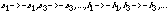 (11)
We will do that building a 5th
order high-pass Butterworth filter.
Instrument 2 is a realization of a Butterworth 5th order high-pass filter. The order of the filter is 5; equation (3) gives:
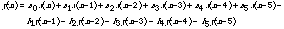
The orchestra follows:
instr 2
idur = p3 ;duration of the sound file
icut = p4 ;cutoff frequency
iscale = p5 ;scaling factor
;Calculate the intermediate coefficient C from Table 4
iv = sin(3.14159*icut/sr)/cos(3.14159*icut/sr)
;Calculate the filter coefficients using the data from Tables
2, 3
iv2 ipow iv,2 ;iv squared
iv3 ipow iv,3 ;iv cubed
iv4 ipow iv,4 ;iv to the fourth
iv5 ipow iv,5 ;iv to the fifth
ia0 = 1/(1+3.2360680*iv+5.2360680*iv2+5.2360680*iv3+3.2360680*iv4+
iv5)
ia1 = -5*ia0
ia2 = 10*ia0
ia3 = -10*ia0
ia4 = 5*ia0
ia5 = -ia0
ib1 = -(5+3*3.2360680*iv+5.2360680*iv2-5.2360680*iv3- 3*3.2360680*iv4-5*iv5)*ia0
ib2 = (10+2*3.2360680*iv-2*5.2360680*iv2-2*5.2360680*iv3+ 2*3.2360680*iv4+10*iv5)*ia0
ib3 = -(10-2*3.2360680*iv-2*5.2360680*iv2+2*5.2360680*iv3+ 2*3.2360680*iv4-10*iv5)*ia0
ib4 = (5-3*3.2360680*iv+5.2360680*iv2+5.2360680*iv3- 3*3.2360680*iv4+5*iv5)*ia0
ib5 = -(1-3.2360680*iv+5.2360680*iv2-5.2360680*iv3+3.2360680*iv4-
iv5)*ia0
;Do the appropriate initializations
aout1 init 0
aout2 init 0
aout3 init 0
aout4 init 0
aout5 init 0
ainput soundin "test_sound" ;the input signal
;Create a 5th order delay
adel1 delay1 ainput
adel2 delay1 adel1
adel3 delay1 adel2
adel4 delay1 adel3
adel5 delay1 adel4
;Calculate the output signal
aout = ia0*ainput+ia1*adel1+ia2*adel2+ia3*adel3+ia4*adel4+
ia5*adel5-ib1*aout1-ib2*aout2-ib3*aout3-ib4*aout4-ib5*aout5
;Apply recursion formula :
aout5 = aout4
aout4 = aout3
aout3 = aout2
aout2 = aout1
aout1 = aout
;provide a simple exponential segment envelope to the signal before
;output
aenv expseg 0.1,.1*idur,1,idur*.8,1,idur*.1,.1
out aout*aenv*iscale ;output the signal
endin
These techniques for building
recursive filters can be applied to any order of Butterworth filter
desired, both high and low-pass. We will now study the case of
band-pass and band-reject filters. In order to extend our vocabulary
we introduce the Chebyshev approximation. We will build digital
Chebyshev band-pass and band-reject filters but the technique
is the same and can be used to build digital Butterworth band-pass
and band-reject filters. Furthermore, the techniques and sets
of equations described above for building digital Butterworth
low and high-pass filters can be used to build digital Chebyshev
low and high-pass filters respectively, of any order desired.
The basic Chebyshev amplitude response is defined as
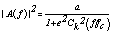 (12)
where k now is both the order of the transfer function and the order of the corresponding Chebyshev polynomial, 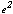 is a parameter which provides the proper passband ripple, and a is a constant which determines the proper dc gain level. As opposed to the Butterworth approximation, the passband is constrained to oscillate between constant bounds (determined by the chosen ripple). Using the form of the Chebyshev transfer function, (detailed formulas are given in the appendix), we can calculate the Chebyshev analog coefficients . Equation (9) takes care of the coefficients 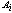. We now give the low-pass filter denominator coefficients or 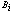 for Chebyshev 1 dB ripple up to 5th order:
TABLE 5
| CHEBYSHEV 1 dB RIPPLE (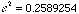) | ||||||
| order | ||||||
| 1 | 1.9652267 | 1 | ||||
| 2 | 1.1025103 | 1.0977343 | 1 | |||
| 3 | 0.4913067 | 1.2384092 | 0.9883412 | 1 | ||
| 4 | 0.2756276 | 0.7426194 | 1.4539248 | 0.9528114 | 1 | |
| 5 | 0.1228267 | 0.5805342 | 0.9743961 | 1.6888160 | 0.9368201 | 1 |
Table 5 can be used for building Chebyshev 1 dB ripple low and high-pass filters in the same way as we described for Butterworth filters. In order to use it for band-pass and band-reject Chebyshev filters we present it in a partially factored form, which is another way to write the denominator of equation (4) using the values for the Chebyshev coefficients:
TABLE 6
| order | CHEBYSHEV 1 dB RIPPLE |
| 1 | (1.965267 + s) |
| 2 | (1.1025104 + 1.0977344s + 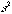) |
| 3 | (0.4941706 + s) (0.9942046 + 0.4941706s + ) |
| 4 | (0.9286753 + 0.2097744s + ) (0.2215684 + 0.5064404s + ) |
| 5 | (0.2894933 + s) (0.9883149 + 0.1789168s + ) (0.4292978 + 0.46841s +) |
In order to get from low-pass to band-pass the following transformation has to be made:
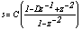 (13)
where C is taken from Table 4 and D is given:
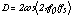 (14)
In other words, we have to substitute (13) in one of the expressions of Table 6, depending on the order of the filter we want to build. Remember that the order of z represents the order of the digital filter. Examining equation (13), we see that a first order of s will result in a 2nd order digital filter, a 2nd order of s will result in a 4th order digital filter, and so on.
As an example, let us build a 2nd order Chebyshev band-pass filter. As we said, we have to substitute (13) to the 1st order form of Table 6. By doing so we get
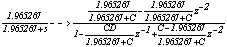 (15)
Comparing (15) and (1) we get:
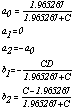 (16)
Let us now use the above information
to build a 2nd order Chebyshev band-pass filter in Csound.
Instrument 3 is a realization of a Chebyshev 2nd order band-pass filter. Since the order of the filter is 2, equation (3) gives:
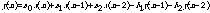
The orchestra follows:
instr 3
idur = p3 ;duration of the sound file
icenter = p4 ;center frequency
ibandwth = p5 ;bandwidth
iscaling = p6 ;scaling factor
;Calculate the intermediate coefficient C using Table 4
ivar = cos(3.14159*ibandwth/sr)/sin(3.14159*ibandwth/sr)
;Calculate the scaling factor D using eq. (14)
iscale = 2*cos(6.28318*icenter/sr)
;Calculate the filter coefficients using the set of equations
(16)
ia0 = 1.965267/(1.965267+ivar)
ia1 = 0
ia2 = -ia0
ib1 = -ivar*iscale/(1.965267+ivar)
ib2 = (ivar-1.965267)/(1.965267+ivar)
;Do the appropriate initializations
aout1 init 0
aout2 init 0
ainput soundin "test_sound" ;the input signal
;Create a 2nd order delay
adel1 delay1 ainput
adel2 delay1 adel1
;Calculate the output signal
aout = ia0*ainput+ia1*adel1+ia2*adel2-ib1*aout1-ib2*aout2
;Apply recursion formula : y(n-1) = y(n), y(n-2) = y(n-1), etc.
aout2 = aout1
aout1 = aout
;provide a simple exponential segment envelope to the signal before
;output
aenv expseg 0.1,.1*idur,1,idur*.8,1,idur*.1,.1
out aout*aenv*iscaling ;output the signal
endin
In order to get from low-pass to band-reject, the following transformation has to be made:
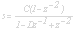 (17)
where, again, C is taken from Table 4 and D from equation (14). Let us for example build a 2nd order Chebyshev 1 dB band-reject filter. Again, because of the form of (17) we have to use the 1st order partially factored form of Table 6. Substitution of (17) to the 1st order partially factored form of Table 6 gives:
(18)
Comparing (18) and (1) we get:
(19)
Let us now use the set of equations
(19) to build a 2nd order Chebyshev 1 dB band-reject filter in
Csound.
Instrument 4 is a realization of a Chebyshev 2nd order band-reject filter. Since the order of the filter is 2, equation (3) gives:

The orchestra follows:
instr 4
idur = p3 ;duration of the sound file
icenter = p4 ;center frequency
ibandwth = p5 ;bandwidth
iscaling = p6 ;scaling factor
;Calculate the intermediate coefficient C using Table 4
ivar = sin(3.14159*ibandwth/sr)/cos(3.14159*ibandwth/sr)
;Calculate the scaling factor D using eq. (14)
iscale = 2*cos(6.28318*icenter/sr)
;Calculate the filter coefficients using the set of equations
(19)
ia0 = 1.965267/(1.965267+ivar)
ia1 = -1.965267*iscale/(1.965267+ivar)
ia2 = ia0
ib1 = -ivar*iscale/(1.965267+ivar)
ib2 = (1.965267-ivar)/(1.965267+ivar)
;Do the appropriate initializations
aout1 init 0
aout2 init 0
ainput soundin "test_sound" ;the input signal
;Create a 2nd order delay
adel1 delay1 ainput
adel2 delay1 adel1
;Calculate the output signal
aout = ia0*ainput+ia1*adel1+ia2*adel2-ib1*aout1-ib2*aout2
;Apply recursion formula : y(n-1) = y(n), y(n-2) = y(n-1), etc.
aout2 = aout1
aout1 = aout
;provide a simple exponential segment envelope to the signal before
;output
aenv expseg 0.1,.1*idur,1,idur*.8,1,idur*.1,.1
out aout*aenv*iscaling ;output the signal
endin
We have presented a step by step method for designing digital Butterworth and Chebyshev filters in Csound. The reader/user can choose the kind and order of the filter he/she wants to build, depending on the effect desired. It should be kept in mind, that computation time and sharpness of the filter response increases as the order of the transfer function increases, so the choice of the order should be made according to the specific need of the application.
The complete analog transfer function of the Butterworth response is given by:
 , if
n even (A.1)
, if
n even (A.1)
, if
n odd (A.2)
In the above formulas we have:
(A.3)
with
(A.4)
In the above formulas, n is
the desired order. In order then to get the coefficients of (9)
and TABLE 3, we have to use (A.1)-(A.4) and compare the results
with (4).
The complete analog Chebyshev transfer function is given by:
, if n even (A.5)
(A.6)
In the above formulas we have:
(A.7)
with
(A.8)
In the above formulas, n is the desired order. In order then to get the coefficients of (9) and TABLE 5, we have to use (A.5)-(A.8) and compare the results with (4).
1. Dodge, Charles & T. A. Jerse. "Computer Music. Synthesis, Composition, and Performance." New York: Schirmer Books, A Division of Macmillan, Inc., 1985.
2. Moore, Richard F. "Elements of Computer Music." New Jersey: Prentice Hall, A Division of Simon & Schuster, 1990.
3. Oppenheim, Alan V. and Ronald W. Schafer. "Digital Signal Processing." New Jersey: Prentice-Hall, Inc., 1975.
4. Stanley, William D. and Gary R. Dougherty and Ray R. Dougherty. "Digital Signal Processing." 2nd edition. Reston, Virginia: Reston Publishing Company, Inc., A Prentice Hall Company, 1984.
5. Strawn, John, edited by. "Digital Audio Signal Processing. An Anthology." Los Altos, California: William Kaufman, Inc., 1985.
6. Thede, Les. "Analog and Digital Filter Design using C." Prentice Hall PTR, Upper Sadle River, New Jersey, 1996.
7. Vercoe Barry. "Csound. A Manual for the Audio Processing System and Supporting Programs with Tutorials." Media Lab, M.I.T., 1993.
8. Weinberg, Louis. "Network Analysis and Synthesis." McGraw-Hill Book Company, Inc., 1962.